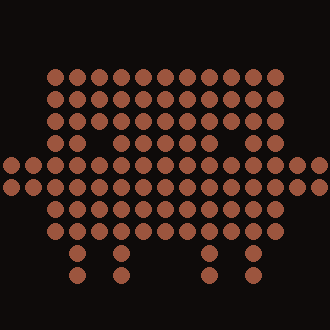
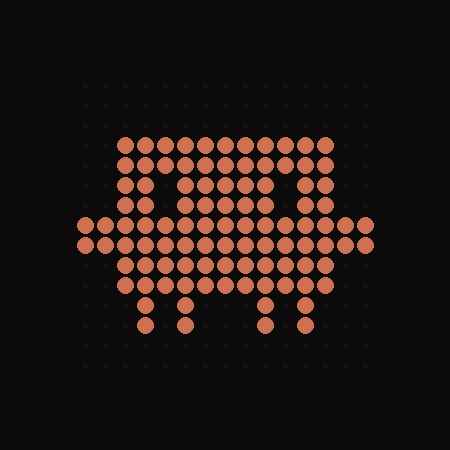
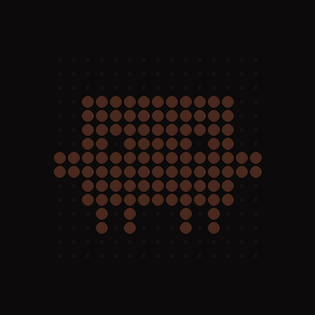

The clawdpad Manual
Clawd — the Claude Code critter — living on a ROLI Lightpad Block.
Illustrated edition · 2026-07-15 · plain-text twin: MANUAL.md

This is Clawd. He breathes, blinks, and glances around. He paces while Claude Code works — faster when the work is heavy. He waves when Claude needs you. He jumps when a task lands. He sleeps at night, badly, if you keep petting him.
Everything on the glass is his body language. He is a creature, not a dashboard.
How the family fits together
His moods
| mood | what you see | when |
|---|---|---|
| awake | breathing, bobbing, small paces, blinks, glances | idle, daytime |
| thinking | pacing, eyes leading — speed = how hard Claude works | a session is active |
| notify | right arm up, waving, gentle pulse | Claude needs input — tap him |
| celebrate | both arms up, jumping · jingle | task lands · double-tap · level-up |
| sleep | dim, eyes closed, slow breath, rare peek | 23:00–07:00 idle |
| qr | the glass becomes a Micro QR code | blockctl qr |
Two sizes: full (he is the glass) and mini (chibi Clawd roams his block like a room). Triple-tap to transform.
Touch
| gesture | reaction |
|---|---|
| press & hold | petting — leans in, glows with pressure |
| slide | eyes (and body) follow your finger |
| tap ×1 | acks a notify · otherwise he looks at you |
| tap ×2 | celebrate jump |
| tap ×3 | full ↔ mini transform (chime) |
Commands
./blockctl status | demo | sessions | clear ./blockctl mode awake|thinking|sleep|notify ./blockctl say "text" -t 60 # wave + chime; tap to ack ./blockctl anim celebrate # jump ./blockctl play jingle|hello|chime # sound (+ jump for jingle) ./blockctl hum on|off # ambient pad while thinking ./blockctl size full|mini # = triple-tap ./blockctl qr TEXT -t 30 # ≤14 alnum or 23 digits (Micro QR M3)
Remote & push
LAN/Tailscale: POST http://<host>:8137/ with
Authorization: Bearer <token> and a JSON command.
Anywhere: publish the JSON (plus "token") to your
secret ntfy.sh topic. Push: with "state_echo": true
every mood change is published to the topic — subscribe with the ntfy app and
your phone buzzes when he needs you.
On your wrist


WATCH.md / WEAR.md.The soul
With the dazzler sister project installed, Clawd shares its tamagotchi soul:
hunger dims his flame (starving = guttering flicker), level-ups jump + jingle,
whispers chime. Feed him by dropping photos/notes in ~/dazzler/feed/.
One soul, two bodies — this side never writes it.
Hardware care
- The block powers off without a host — after a reboot, press its side button once; blocksd re-adopts it.
- USB-C is the tether (Bluetooth is on the roadmap); it charges over it.
- blocksd needs
/dev/snd/seq:sudo usermod -aG audio $USER. - Never run
blocksd led …while the daemon runs.
When something looks wrong
| symptom | fix |
|---|---|
| factory multicolor squares | LED program not running — apply patches/ to blocksd (frame acks ≠ rendering; see BLOCKSD-FIXES.md) |
| dark glass | blocksd down or block asleep — check the service, press the button |
| no sound | install pw-play/aplay (journal says “music disabled”) |
| gone at 23:00 | asleep. ./blockctl mode awake summons him |
| QR won’t scan | it’s an inverted Micro QR — stock cameras vary; the clawdpad app will always read it |
clawdpad · MIT · built with Claude Code, for Claude Code, by Claude Code — supervised by a human who kept saying “make it cuter.”